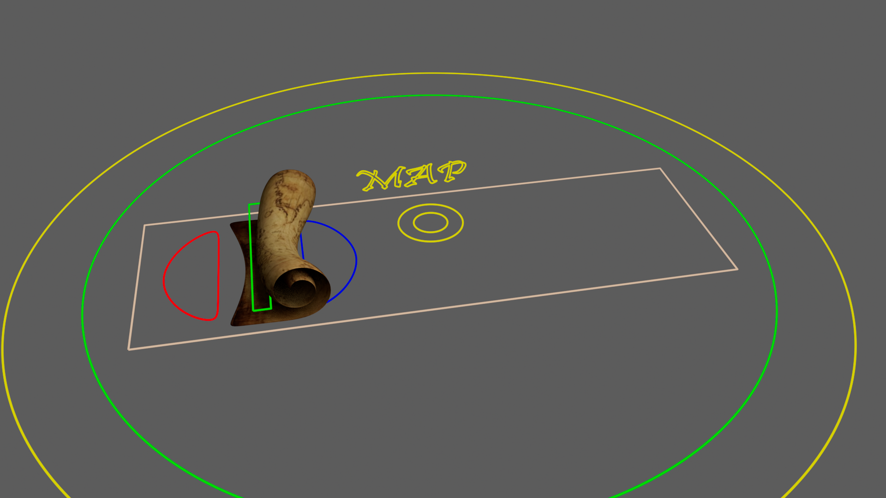
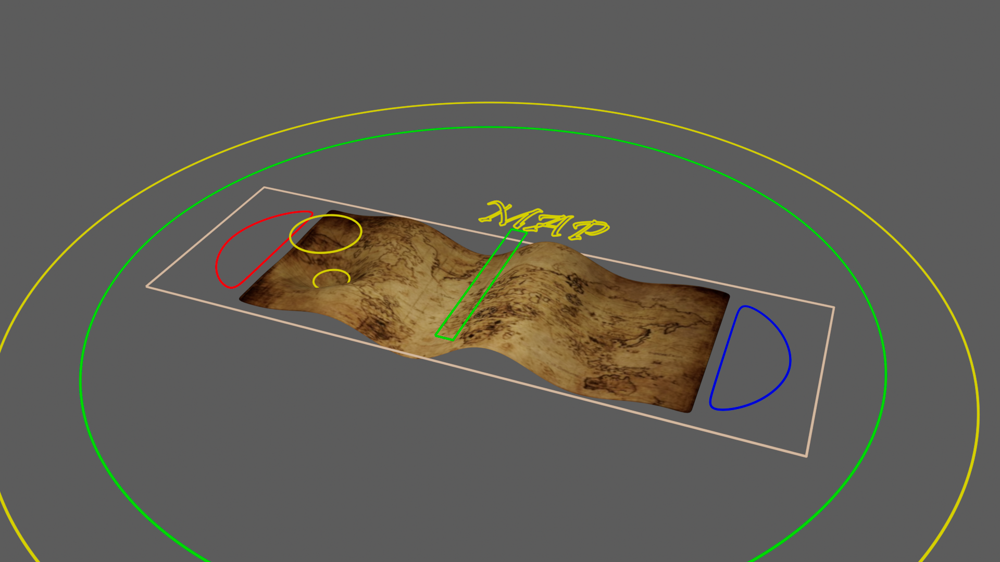

Map
Deformers
Vídeo aquí

Roll Up the Map
In order to make the map rollable and stretchable, a Bend deformer and a Squash deformer have been applied. In addition to this, to allow it to rotate in a more realistic way, a Twist deformer has also been used.

Other effects
On the other hand, in order to simulate the pressure of a finger on the map and the effect of the wind, a Soft Mode and a Sine deformer have been used respectively.